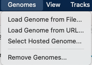
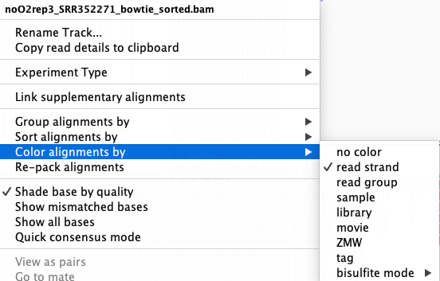

Data analysis
- Introduction
- Search for differentially expressed genes
- Alignments visualization using a genome browser
- Functional analyses of differentially expressed genes
Introduction
Objective of this practical session
During this practical session, you will learn:
-
To perform statistical analysis of the gene expression matrix in order to identify differentialy expressed genes between two conditions.
-
To validate tour finding by browsing your results on the C albicans reference genome
-
To find biological relevant target genes
Search for differentially expressed genes
In their article (Guida et al., 2011), the authors repeated the experiment 6 times for normoxic condition (with O2) and 4 times for hypoxic conditions (without O2).
What you have to do
- Search for differentially expressed genes using limma and DESeq2 R packages for microarrays and RNAseq experiments.
- How many genes are selected with different adjusted p-value thresholds (5%, 1%, etc.)?
Set up your working environment
Connect to Rstudio server of the IFB. Look at the tutorial on how to connect to IFB-core Rstudio server to see how to proceed.
Save the working notebook in your personal environment
- In "File > Open File..." enter the path
/shared/projects/2420_ens_hts/data/tutorials/data_analysis.Rmdto open the notebook containing all the code needed for the practical.
2. Save it into your personal folder on your IFB account using "File > Save As"
Follow the instruction of the notebook to conduct the analysis
You can also visualize the final report version.
You can find help on how to use R markdown on the R markdown project webpage.
Alignments visualization using a genome browser
IGV
The Integrative Genomics Viewer (IGV) is a high-performance visualization tool for interactive exploration of large genomic datasets. It supports a wide variety of data types, including array-based, high throughput sequence data and genomic annotations. In this practical, we will use IGV to visualize mapping results.
Download the necessary files on your computer
To download files from the cluster to your current directory (on your own computer), open a new terminal and run the following command. Alternatively you can use the file browsing system of Open On Demand web portal.
# First bam and bai alignement files
scp '<your login>@core.cluster.france-bioinformatique.fr:~/RNAseq/2-Mapping/*.bam*' .
# Next the reference genome sequence and gene annotation files
scp '<your login>@core.cluster.france-bioinformatique.fr:/shared/projects/2420_ens_hts/data/rnaseq/C_parapsilosis_CGD.fasta' .
scp '<your login>@core.cluster.france-bioinformatique.fr:/shared/projects/2420_ens_hts/data/rnaseq/C_parapsilosis_ORFs.gff' .
Visualize mapping results with IGV
On linux type igv in a terminal window to launch the program (You can also download IGV and follow the instalation instructions according to your OS).
Once the IGV program is launched, it is necessary to load the reference genome “Genomes/Load Genome from File...” (see below). Select the FASTA file with the genomic sequence of C. parapsilosis “C_parapsilosis_CGD.fasta” downloaded from IFB server.

Attention
In order to IGV to create an index of your genome, you need to copy the reference genome FASTA file in a directory where you have write permission.
Next, load the C. parapsilosis annotation file "C_parapsilosis_ORFs.gff" using the “File/Load from File...” menu.
Go to "File/Save session…" menu in order to backup all your parameters and visualisation options.
C. parapsilosis genome and annotation are now loaded into IGV and can be selected from the top/left menu (see 1 below). The genomic sequence can be therefore explored, choosing for instance, a particular chromosome (see 2 below) or a genomic region (see 3). Note that gene annotations (ORF positions) are shown at the bottom of the window (see 4, blue lines) and you can obtain a more detailed view of the sequence using the cursor located on the top/right of the window, see 5).

Mapping results (“.sorted.bam” files) can now be imported (“File / Load from File”). Zoom in genomic regions in order to visualize read alignements.

You can color reads according to several properties such as read strand by right click on the desire track.

What you have to do
- Did the authors of the article use stranded-specific protocols?
- Do you validate the differentially expressed genes found at the previous step?
Functional analyses of differentially expressed genes
Several tools are available online to evaluate the biological relevance of the gene sets you select after the differential analysis. For example you can you use the GoTermFinder tool dedicated to Candida yeast species to retrieve functional annotation. Be careful to choose the genome of Candida parapsilosis in the species selection dialog box. You can also obtain information on a specific gene using the Candida Genome Database.
What you have to do
- What are the functions of the genes in your lists (identified at the previous step).
- Are they relevant with the studied biological system described by Guida et al. in their publication?
- Compare your results with those presented in the original publication
To go further with functional analyses, you can read the Nine quick tips for pathway enrichment analysis article